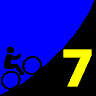

|
| New men's overall leader Tim Clark sets a brutal pace on the lower slopes. Eventual first to the top, multi-time Low-Key men's champion Tracy Colwell is third. |
|  |
2008 Low-Key Hillclimbs Week 7 Results: Metcalf Rd 15 Nov 2008 |
|
| New men's overall leader Tim Clark sets a brutal pace on the lower slopes. Eventual first to the top, multi-time Low-Key men's champion Tracy Colwell is third. |
The Low-Keys were graced today with warm, no hot, sunny weather for our first ever visit to the infamous Metcalf Mauler. Gary Griffin honked the horn to signal the start for our eclectic group: in addition to an excellent turnout of cyclists, including a much-welcomed infusion of juniors, the crew included a tandem, a unicyclist, and two runners (including your friendly commentator).
There's nothing subtle about Metcalf. From the start, it's hit the gas, and keep it there. With only 1.8 miles of length with less than 1000 feet of climbing, a good time on Metcalf requires being unfraid to punch through the pain threshold. The end will come soon. Really.
Never one to flinch at the prospect of pain, Tim Clark set the early pace. Even Low-Key legend Tracy Colwell had to let Tim go, with only Thomas Novikoff able to match the tempo. Tracy doesn't give up easily, however, and never let Tim's gap reach the critical point. Sure enough, the gap started to close... until Tracy passed Tim to take the next-fastest time on the day, second only to Bill Bushnell riding his hybrid-electric recumbent. After Tracy and Tim, series leader Clark Foy came in third followed by Scott Frake and, soon after, a resurgent Greg McQuaid. Greg was enjoying the advantages of his 30-tooth rear cog, after having suffered badly on the upper slopes of Jamison Creek last week. Thomas crossed the line next, perhaps paying the penalty for trying to follow Tim's early, torrid pace. Unbelievable, Gary finished the less than two minutes later, 28th among the non-motorized participants, running up the slope at a pace most would be happy to manage on a flat road.
Soon after Gary's group crossed the line, Jennie Phillips continued her streak by taking the W for Sisters of No Mercy, a team on a quest to retake the series overall lead from San Jose Bike Club who'd stepped into the top position on Jamison Creek. Lucia Mokres, Janet Martinez, Holly Harris, and Mei Xi were the next to finish. Despite excellent results, the sisters weren't quite able to close the gap to SJBC, led by Clark Foy's excellent riding this year, and bolstered this week by Greg McQuaid and Tom Robert's outstanding rides. Two weeks to go...
Next week: Lomas Cantadas, Low-Key's first foray into the Berkeley Hills. Expect fresh blood to be at the starting line, a new chance for the Low-Key regulars to show some newbies how it's done (or vice versa!)
Thanks to coordinator Gary Griffin, with help from Fred Butts, Stephen Fong, Janet Griffin, Martin Hyland, and Howard Kveck for making today's climb possible!median time = 8:01
pl # rider team category time mph fph score 1 244 Bill Bushnell Low-Key Hybrid 8:01 13.47 7365 100.00
median time = 13:53
pl # rider team category time mph fph score 1 51 Tracy Colwell Team Colwell 2 10:29 10.30 5632 132.43 2 210 Tim Clark Red Octane 35+ 10:31 10.27 5614 132.01 3 39 Clark Foy San Jose Bike Club 40+ 10:53 9.92 5425 127.57 4 43 Scott Frake Webcor/Alto Velo Bald 10:55 9.89 5408 127.18 5 97 Greg McQuaid San Jose Bike Club 35+ 11:13 9.63 5264 123.77 6 217 Thomas Novikoff Cambio 2 11:18 9.56 5225 122.86 7 352 Geoff Drake Bike Trip 45+ 11:20 9.53 5209 122.50 8 328 Mark Edwards Bike Trip 45+ 11:35 9.32 5097 119.86 9 578 Tom Roberts San Jose Bike Club 40+ 11:35 9.32 5097 119.86 10 546 Hector Barron 11:51 9.11 4982 117.16 11 17 Brian Edwards Hell Riders 25-29 12:01 8.99 4913 115.53 12 176 Dave Rossow Webcor/Alto Velo 35+ 12:03 8.96 4900 115.21 13 458 Craig Sanders X Men 40+ 12:06 8.93 4879 114.74 14 284 John Walker Google 40+ 12:15 8.82 4820 113.33 15 456 Yuma Koishi San Jose Bike Club Junior 12:17 8.79 4807 113.03 16 585 Michael Barnes 12:21 8.74 4781 112.42 17 506 Nils Tikkanen Bike Trip 3 12:31 8.63 4717 110.92 18 20 James Porter Western Wheelers Out Of Shape Dads 12:34 8.59 4698 110.48 19 560 Karl Schilling LGBRC 45+ 12:35 8.58 4692 110.33 20 142 Rich Hill LGBRC 40+ 12:37 8.56 4680 110.04 21 315 Ken Gallardo Pen Velo/Kondra 30+ 12:41 8.52 4655 109.46 22 452 Bruce Gardner Monta Vista Velo 35+ 12:54 8.37 4577 107.62 23 124 Jeff Farnsworth San Jose Bike Club 50+ 13:00 8.31 4542 106.79 24 335 Jim Langley Bike Trip 50+ 13:01 8.30 4536 106.66 25 343 Matt Werner Bike Trip 45+ 13:03 8.28 4524 106.39 26 36 Bill Davis Google 4 13:05 8.25 4513 106.11 27 522 Marc Barberis Western Wheelers 40+ 13:10 8.20 4484 105.44 28 402 Gary Gellin Sisters of No Mercy Runner 13:13 8.17 4467 105.04R 29 323 Scott Martin Bike Trip 50+ 13:19 8.11 4434 104.26 30 406 Gento Kusano San Jose Bike Club Junior 13:27 8.03 4390 103.22 31 421 Matt Wocasek Bike Trip 4 13:31 7.99 4368 102.71 32 273 Calvin Do Skinny slow guys 35+ 13:33 7.97 4357 102.46 33 307 Christian Paquet Doogie 50+ 13:35 7.95 4347 102.21 34 539 Andy Cedilnik 30+ 13:42 7.88 4309 101.34 35 397 Michael Williams Sisters of No Mercy 35+ 14:04 7.68 4197 98.70 36 483 Bryan King Bike Trip 4 14:11 7.61 4163 97.88 37 237 Bill Preucel Sisters of No Mercy 45+ 14:19 7.54 4124 96.97 38 457 Robert Palassou Sisters of No Mercy 14:20 7.53 4119 96.86 39 579 Jonathan Walden 14:21 7.53 4114 96.75 40 29 Dean Larson Team Dino 40+ 14:24 7.50 4100 96.41 41 569 Vincent Valvano 50+ 14:24 7.50 4100 96.41 42 236 Paul Melville Doogie 55+ 14:29 7.46 4076 95.86 43 467 Vincent Juarez San Jose Bike Club Junior 14:30 7.45 4072 95.75 44 384 Dan Rohrer Leafy Joe 14:32 7.43 4062 95.53 45 412 John Pollard Bike Trip 45+ 14:36 7.40 4044 95.09 46 286 William von Kaenel LGBRC 40+ 14:39 7.37 4030 94.77 47 346 Joe Farinha San Jose Bike Club 45+ 14:40 7.36 4025 94.66 48 1 Dan Connelly Low-Key 3 15:45 6.86 3749 88.15R 49 557 Matt Beadon Nvidia 30+ 15:50 6.82 3729 87.68 50 810 Alexander Garza Monta Vista Velo 55+ 16:03 6.73 3679 86.50 51 337 Bruce Swanson Leafy Joe 45+ 16:18 6.63 3622 85.17 52 505 Christopher Olson Google 16:40 6.48 3542 83.30 53 809 Phil Dubach Western Wheelers 35+ 16:43 6.46 3532 83.05 54 70 Bob Parker AV: Old Guys Finish 50+ 16:43 6.46 3532 83.05T 55 336 Ed Noskowski Leafy Joe 45+ 16:55 6.38 3490 82.07 56 553 Ben Weir Bike Forums Unicycle 16:59 6.36 3476 81.75U 57 351 Jeff Swan Team Spike 17:20 6.23 3406 80.10 58 498 Hajime Kusano San Jose Bike Club 50+ 17:24 6.21 3393 79.79 59 510 Rick Piras 50+ 17:28 6.18 3380 79.48 60 583 Brian Baccus San Jose Bike Club 50+ 17:39 6.12 3345 78.66 61 73 Barry Burr One Leg to Stand On 45+ 17:40 6.11 3342 78.58 62 478 Patrick Callahan Western Wheelers 35+ 17:53 6.04 3301 77.63 63 496 Garry Chin Garry 40+ 17:57 6.02 3289 77.34 64 132 Joseph Maurer RUSA 60+ 18:01 5.99 3277 77.06 65 574 Mark Stepovich Poeseur Racing 45+ 18:34 5.82 3180 74.78 66 531 Dan Dour 45+ 18:49 5.74 3138 73.78 67 621 Paul Woodard Team Spike 19:09 5.64 3083 72.50 68 484 Wolfgang Timm Western Wheelers 40+ 19:44 5.47 2992 70.35 69 800 Michael Ahern LGBRC 40+ 19:53 5.43 2969 69.82 R : runner T : tandem score U : unicycle
median time = 16:21
pl # rider team category time mph fph score 1 449 Jennie Phillips Sisters of No Mercy 45+ 13:54 7.77 4247 117.63 2 270 Lucia Mokres LGBRC 3 14:35 7.41 4048 112.11 3 240 Janet Martinez Sisters of No Mercy 40+ 14:41 7.36 4021 111.35 4 394 Holly Harris Sisters of No Mercy 45+ 14:57 7.22 3949 109.36 5 445 Mei Xi Mud 'n' Crud 15:32 6.95 3801 105.26 6 356 Laura Jump Team Spike 16:21 6.61 3611 100.00 7 360 Gail Stanley Team Spike 19:08 5.64 3086 85.45 8 324 Ileana Parker Webcor/Alto Velo Tandem 16:43 6.46 3532 83.05T 9 489 Tamara Cracknell Google 30+ 20:48 5.19 2838 78.61 10 511 Marie-Claire Vacher Western Wheelers 22:43 4.75 2599 71.97 11 27 Christine Holmes Low-Key 40+ 24:38 4.38 2397 66.37 12 111 Pat Parseghian Google 50+ 24:53 4.34 2373 65.71 T : tandem score
pl team score scoring 1 San Jose Bike Club 371.20 (Clark Foy, Greg McQuaid, Tom Roberts) 2 Bike Trip 353.27 (Geoff Drake, Mark Edwards, Nils Tikkanen) 3 Sisters of No Mercy 338.34 (Jennie Phillips, Janet Martinez, Holly Harris) 4 LGBRC 332.49 (Lucia Mokres, Karl Schilling, Rich Hill) 5 Webcor/Alto Velo 325.44 (Scott Frake, Dave Rossow, Ileana Parker) 6 Google 302.75 (John Walker, Bill Davis, Christopher Olson) 7 Western Wheelers 298.97 (James Porter, Marc Barberis, Phil Dubach) 8 Team Spike 265.55 (Laura Jump, Gail Stanley, Jeff Swan) 9 Leafy Joe 262.77 (Dan Rohrer, Bruce Swanson, Ed Noskowski) 10 Low-Key 254.52 (Bill Bushnell, Dan Connelly, Christine Holmes) 11 Doogie 198.07 (Christian Paquet, Paul Melville) 12 Monta Vista Velo 194.12 (Bruce Gardner, Alexander Garza) 13 Team Colwell 132.43 (Tracy Colwell) 14 Red Octane 132.01 (Tim Clark) 15 Cambio 122.86 (Thomas Novikoff) 16 Hell Riders 115.53 (Brian Edwards) 17 X Men 114.74 (Craig Sanders) 18 Pen Velo/Kondra 109.46 (Ken Gallardo) 19 Mud 'n' Crud 105.26 (Mei Xi) 20 Skinny slow guys 102.46 (Calvin Do) 21 Team Dino 96.41 (Dean Larson) 22 Nvidia 87.68 (Matt Beadon) 23 AV: Old Guys Finish 83.05 (Bob Parker) 24 Bike Forums 81.75 (Ben Weir) 25 One Leg to Stand On 78.58 (Barry Burr) 26 Garry 77.34 (Garry Chin) 27 RUSA 77.06 (Joseph Maurer) 28 Poeseur Racing 74.78 (Mark Stepovich)